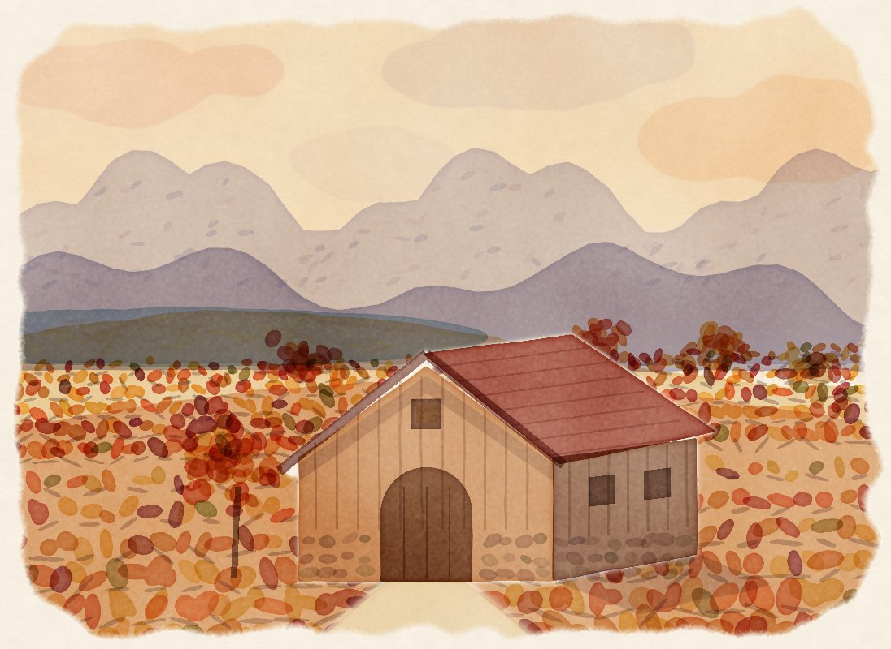

Cantina Valle dei Laghi · Arco, dal 1920
Facciamo vino ad Arco dal 1920. Oggi vogliamo riportare in cantina il più paziente di tutti: il Vino Santo.
1920La cantina nasce all'indomani della Grande Guerra. Il Trentino è appena diventato italiano, e il Vino Santo, che per decenni aveva viaggiato verso Vienna e la Germania, perde da un giorno all'altro i suoi mercati.
Farlo chiede anni: l'uva appassisce per mesi, il vino affina almeno quattro anni e da un quintale d'uva escono al massimo 30 litri. Così, per decenni, sopravvive quasi solo nelle cantine di poche famiglie. Anche da noi la tradizione si interrompe.
Vogliamo farlo riscoprire. Ogni ottobre scegliamo i grappoli più sani di Nosiola e li stendiamo sulle arèle, i graticci di legno dove l'«ora del Garda», il vento che sale dal lago, li asciuga piano per tutto l'inverno. Li spremiamo nella Settimana Santa, da cui il nome, e aspettiamo almeno quattro anni prima di aprire una bottiglia.
Oggi lo fanno poche cantine. Proprio per questo vale la pena assaggiarlo.
Il Vin Santo è toscano: Trebbiano e Malvasia, piccole botti chiamate caratelli e un piattino di cantucci accanto. Il nostro è Vino Santo, con la «o»: trentino, di Nosiola, appassito fino a Pasqua. Lontani parenti, caratteri diversissimi. Se però portate i cantucci, non ci offendiamo.
Prenotazione obbligatoria, entro il giorno prima.
Oppure scrivete a cantinavalledeilaghi@gmail.com
Telefono: +39 331 758 5552
Regala un laboratorio: voucher per due persone per il laboratorio «Dalla botte», 80 €, valido fino al 31 marzo.
Via Linfano, 81, 38062 Arco (TN). Apri la mappa
Il parcheggio si trova dietro la cantina: seguite le indicazioni dalla via principale.
Bevi responsabilmente.
Cantina Valle dei Laghi · Arco, seit 1920
Seit 1920 machen wir Wein in Arco. Heute holen wir den geduldigsten von allen zurück in den Keller: den Vino Santo.
1920Das Weingut entsteht kurz nach dem Ersten Weltkrieg. Das Trentino ist gerade italienisch geworden, und der Vino Santo, der jahrzehntelang nach Wien und Deutschland ging, verliert von einem Tag auf den anderen seine Märkte.
Er braucht Jahre: Die Trauben trocknen monatelang, der Wein reift mindestens vier Jahre, und aus 100 Kilo Trauben werden höchstens 30 Liter. So überlebt er jahrzehntelang fast nur in den Kellern weniger Familien. Auch bei uns reißt die Tradition ab.
Wir wollen, dass man ihn wiederentdeckt. Jeden Oktober wählen wir die gesündesten Nosiola-Trauben aus und legen sie auf die arèle, Holzgestelle, auf denen die „Ora del Garda“, der Wind vom See, sie den ganzen Winter langsam trocknet. Gepresst wird in der Karwoche, daher der Name. Dann warten wir mindestens vier Jahre, bevor wir eine Flasche öffnen.
Heute machen ihn nur noch wenige Weingüter. Genau deshalb lohnt es sich, ihn zu probieren.
Vin Santo kommt aus der Toskana: Trebbiano und Malvasia, kleine Fässer namens caratelli und ein Teller Cantucci dazu. Unserer ist Vino Santo, mit „o“: aus dem Trentino, aus Nosiola, getrocknet bis Ostern. Entfernte Verwandte, ganz verschiedene Charaktere. Wer trotzdem Cantucci mitbringt: Wir sind nicht beleidigt.
Anmeldung erforderlich, spätestens am Vortag.
Oder schreiben Sie an cantinavalledeilaghi@gmail.com
Telefon: +39 331 758 5552
Einen Workshop verschenken: Gutschein für zwei Personen für den Workshop „Aus dem Fass“, 80 €, gültig bis 31. März.
Via Linfano, 81, 38062 Arco (TN). Karte öffnen
Der Parkplatz befindet sich hinter dem Weingut: Folgen Sie der Beschilderung von der Hauptstraße.
Bitte genießen Sie verantwortungsvoll.
Cantina Valle dei Laghi · Arco, since 1920
We have been making wine in Arco since 1920. Now we are bringing back the most patient wine of all: Vino Santo.
1920The winery was founded just after the First World War. Trentino had just become Italian, and Vino Santo, which for decades had travelled to Vienna and Germany, lost its markets almost overnight.
It takes years to make: the grapes dry for months, the wine ages for at least four years, and 100 kilos of grapes give at most 30 litres. For decades it survived almost only in a few family cellars. Here, too, the tradition was lost.
We want people to rediscover it. Every October we pick the healthiest Nosiola bunches and lay them on the arèle, wooden racks where the “Ora del Garda”, the breeze from the lake, dries them slowly all winter. We press them in Holy Week, hence the name, and wait at least four years before opening a bottle.
Today only a handful of wineries still make it. That is exactly why it is worth tasting.
Vin Santo is Tuscan: Trebbiano and Malvasia, small barrels called caratelli, and a plate of cantucci on the side. Ours is Vino Santo, with an “o”: from Trentino, made from Nosiola, dried until Easter. Distant cousins, very different characters. If you bring cantucci anyway, we won't be offended.
Booking required, by the day before.
Or write to cantinavalledeilaghi@gmail.com
Phone: +39 331 758 5552
Give a workshop: a voucher for two people for the “From the barrel” workshop, €80, valid until 31 March.
Via Linfano, 81, 38062 Arco (TN). Open the map
The car park is behind the winery: follow the signs from the main road.
Please drink responsibly.